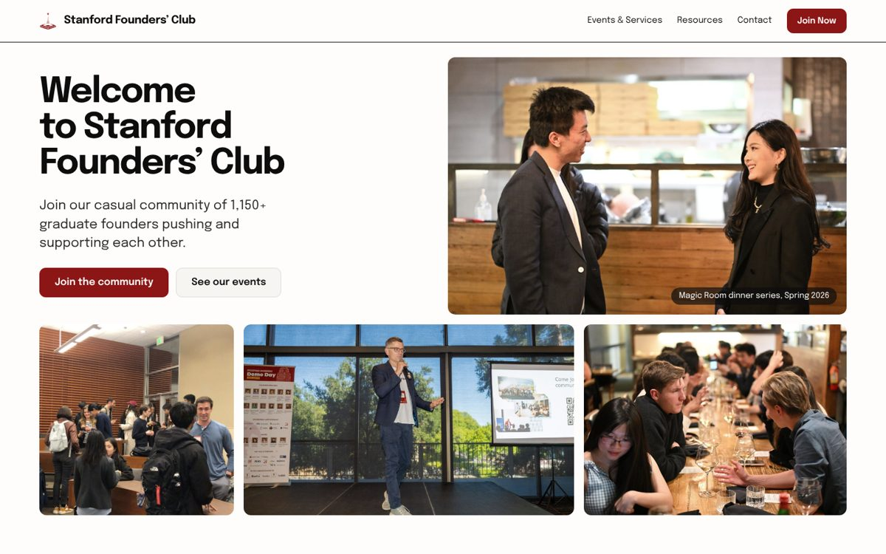
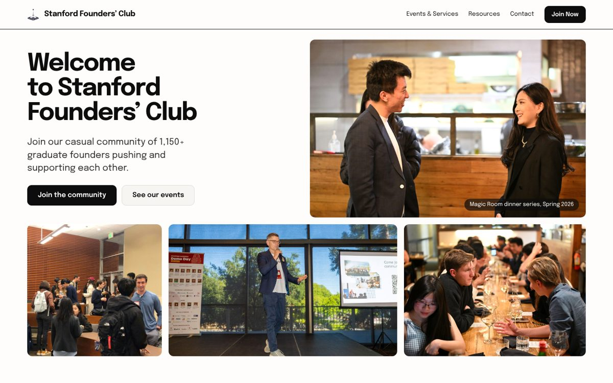
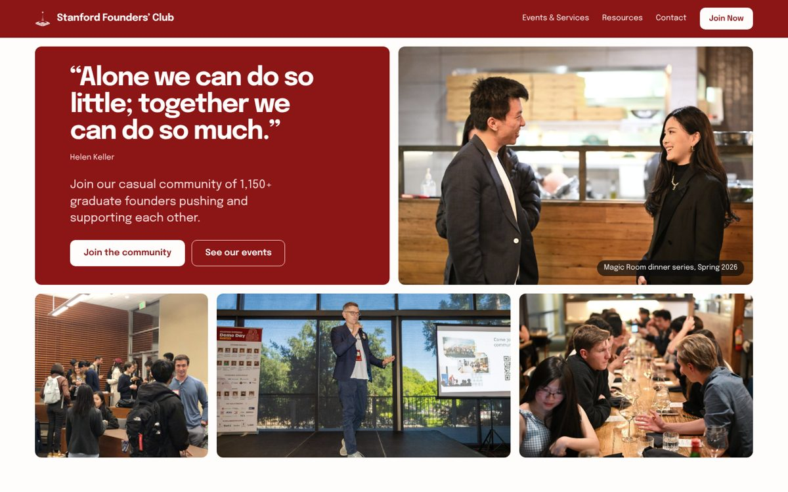
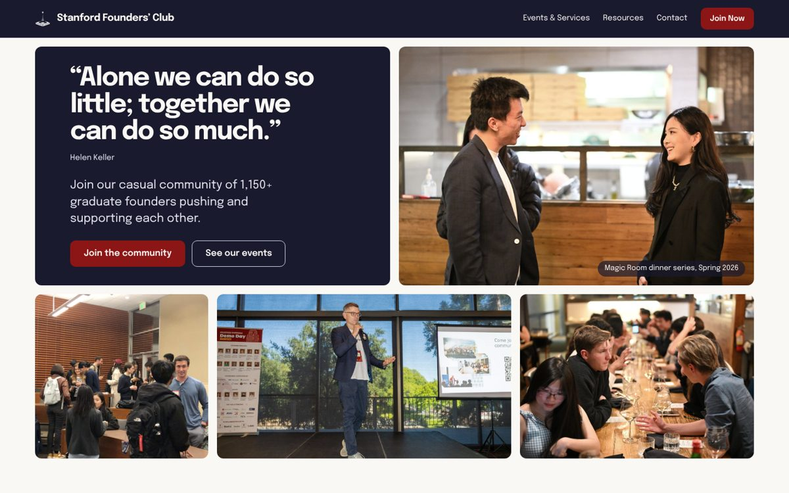
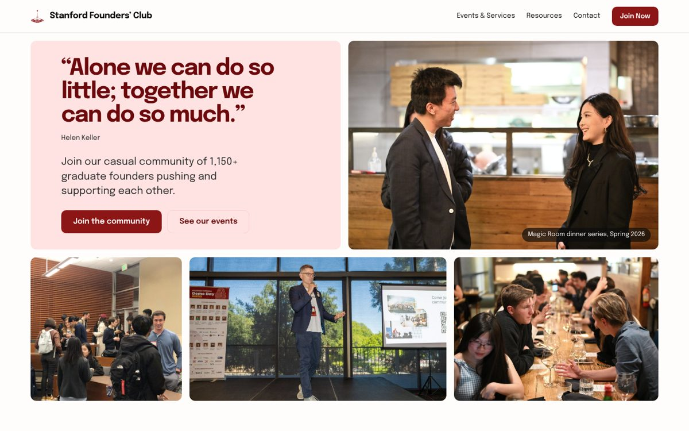
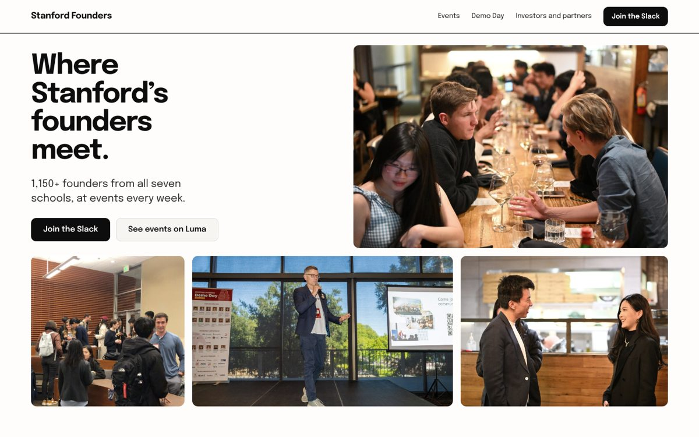
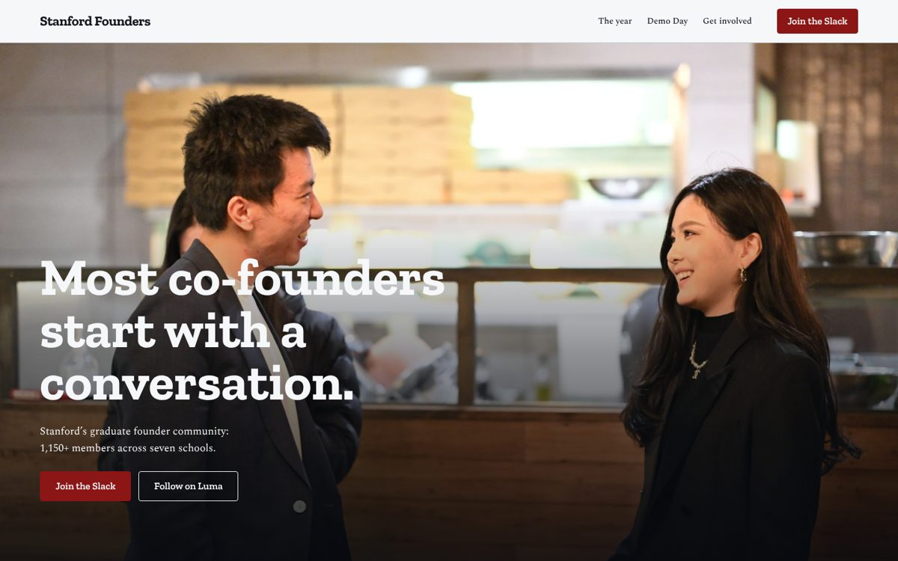
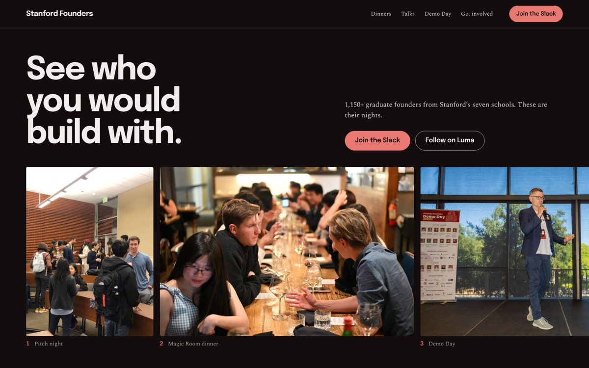

Homepage directions for Stanford Founders’ Club
Full-page mockups built from the club’s own photos, figures and links. Open one to scroll it at full size; the “All mockups” button brings you back here.
Round 4: D’s white space, colour held back, “Welcome to Stanford Founders’ Club”

D4. Cardinal accents
D as you liked it, with Cardinal in four places only: the logo, the filled buttons, the four stat figures and the “Open to all” tags.
- The smallest step from D that still reads as Stanford
- Cardinal always marks something to act on or count


D5. Colour from the photographs
The interface stays black and white, as in D, but the photos run at full colour instead of muted, so the colour comes from the events themselves.
- Closest to D; the most photographic
- Cardinal survives only on the tags and the focus ring

D6. Parchment and navy
Same open layout on your current site’s parchment, with navy type and a navy footer, and Cardinal on the logo and buttons.
- The warmest of the three, and familiar from today’s site
- No filled boxes; the navy is in the type, not in panels

Round 3: D with more colour, the club mark, and your own homepage content

D1. Cardinal
Cardinal carries the nav, the Helen Keller quote tile, the stats band and the Demo Day band. Everything else stays white, so the photos still lead.
- The boldest colour, and the most recognisably Stanford
- One colour family only: Cardinal and its pale tint


D2. Cardinal and navy
Your current site’s own palette: navy surfaces on parchment, with Cardinal kept for every action. Familiar to anyone who knows the site today.
- Calmer than D1; Cardinal always means “click here”
- The navy and parchment come straight from your stylesheet


D3. Programme colours
Each of the four programmes gets its own pale tint (rose, sky, sage and sand), and it carries through to the matching door further down. Cardinal holds the actions and the footer.
- The most colourful, and the friendliest
- The tints are my own, not Stanford’s official palette

Round 2: image-heavy, in the type from A and C

D. Mosaic
The first screen is a wall of the club’s own nights with the headline pinned in one tile. A photo grid shows each programme, then Demo Day in one wide frame and four ways in, each with its own picture.
- Epilogue throughout, as in C; white paper, Cardinal for what is open
- Eleven photographs, every one labelled with what it shows


E. Photo essay
A year at the club told as chapters: a full-bleed cover, then the dinner table, the talks, pitch night as a triptych, and Demo Day in one wide frame on dark.
- Zilla Slab and Spectral, as in A, with the photos in full colour
- Reads as a story, top to bottom


F. Contact sheet
A dark page like a photographer’s contact sheet: each kind of night is a row of photos you scroll sideways, with Demo Day carrying its figures.
- Epilogue heads from C over a Spectral body from A
- The most photographs (about 20) and the easiest to add to

Round 1

A. Newsprint
The club as a newspaper front page: a slab-serif headline, black-and-white photos with captions, the WhatsApp origin story in columns, and Cardinal only on links.
- Closest to Stanford’s own tone, and reads as credible to investors
- Keeps the Helen Keller line as the closing statement


B. Overprint
A two-colour event poster: heavy wide capitals, crowd photos printed in teal and orange, Demo Day set as a bill, and a questions section for founders, investors and partners.
- The loudest and most social of the three
- Drops Cardinal for teal and orange


C. Ink
A plain community notice board: white paper, black type, and a front desk on the first screen with four ways in (Slack, Luma, newsletter, partners), each tagged with who it is open to.
- Every audience sees its own door without scrolling
- Easiest to maintain as plain HTML

Mockups only. Join buttons point at the current Google Form until a Slack invite link is supplied; contact and resources links go to the live site.